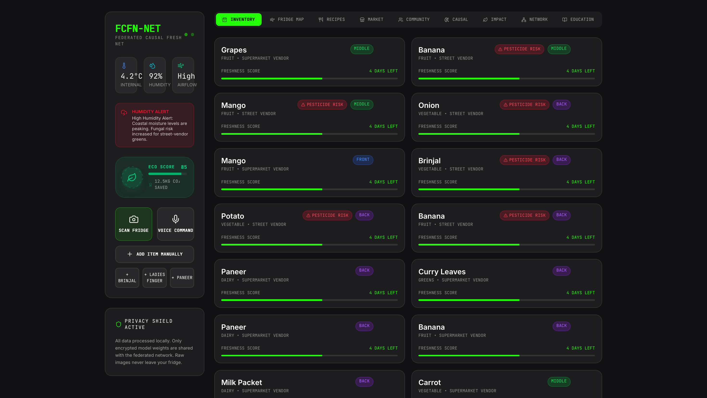
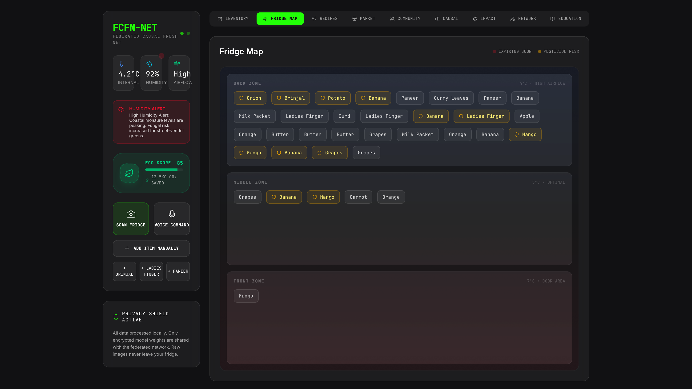
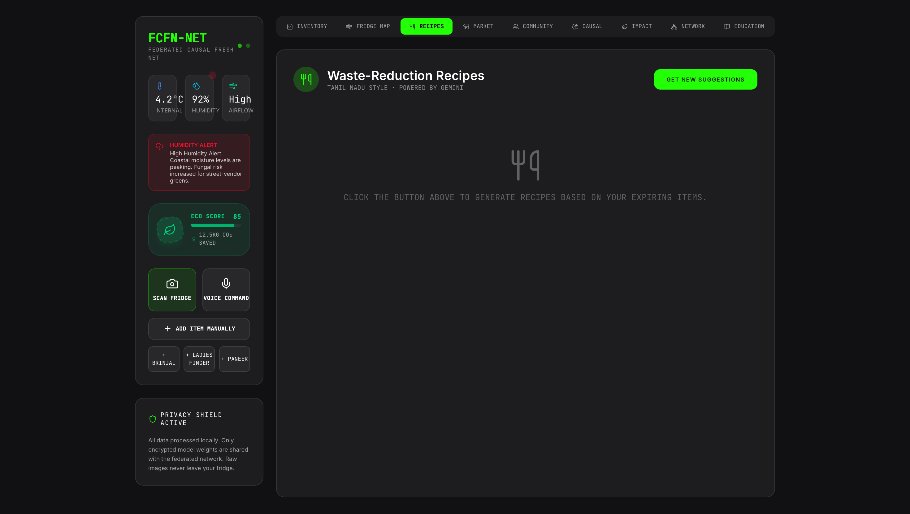
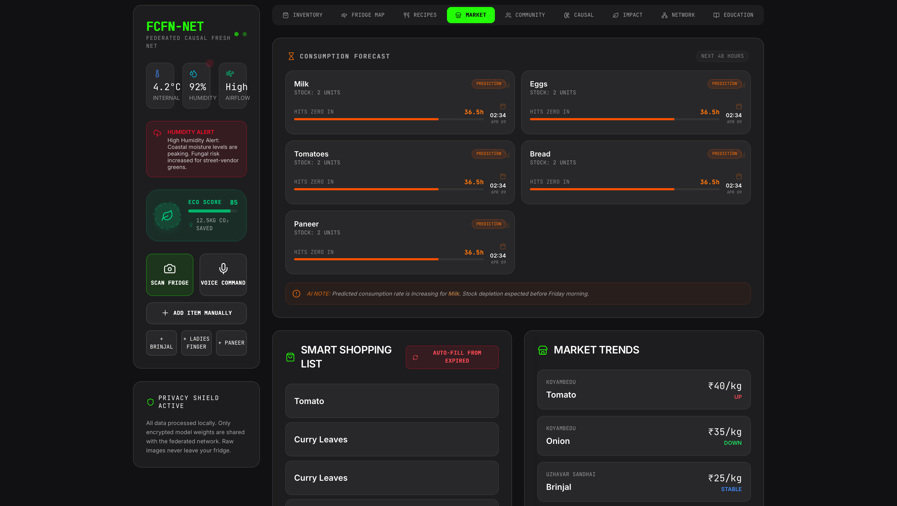
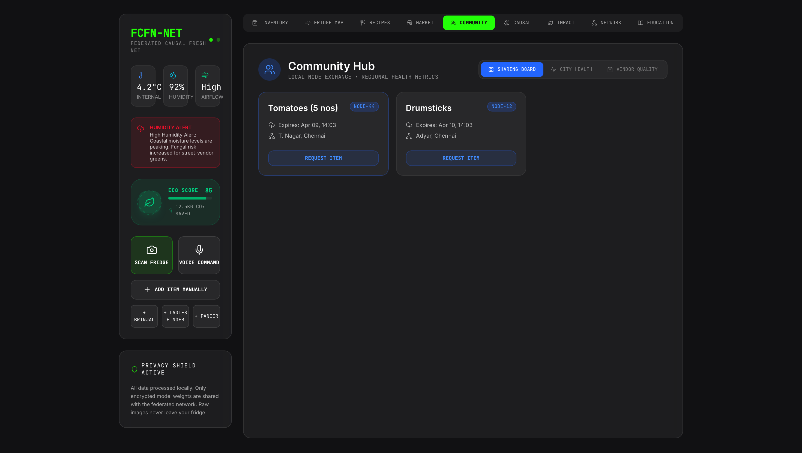
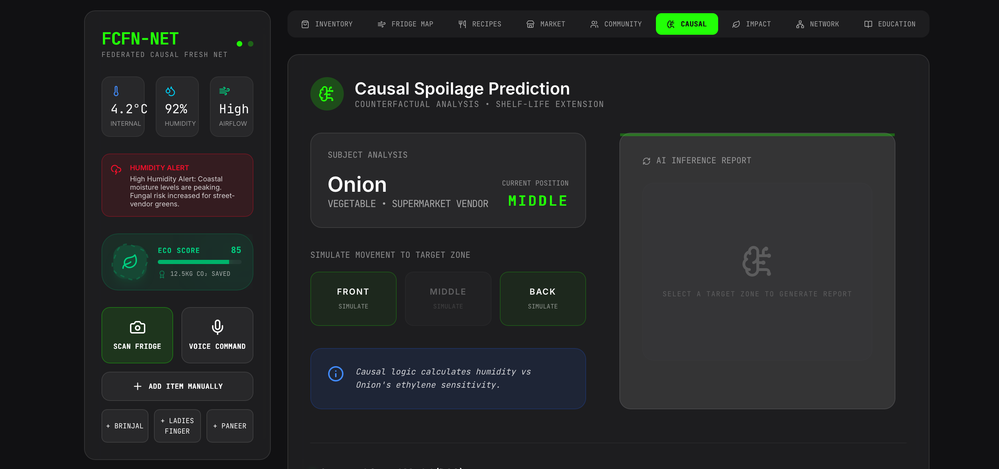
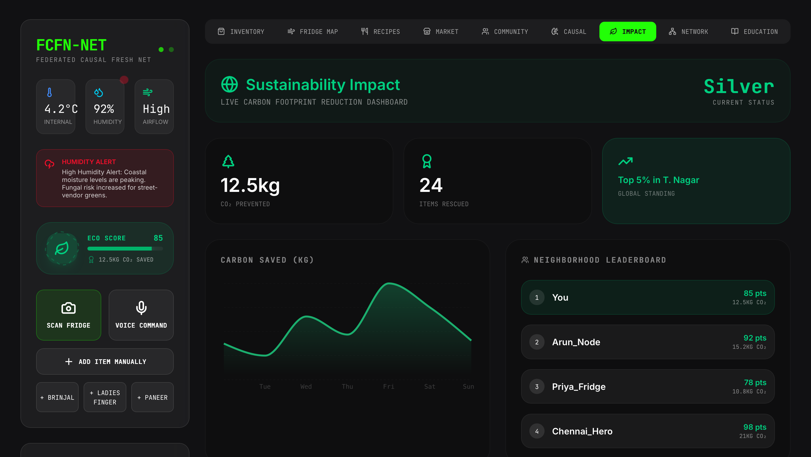
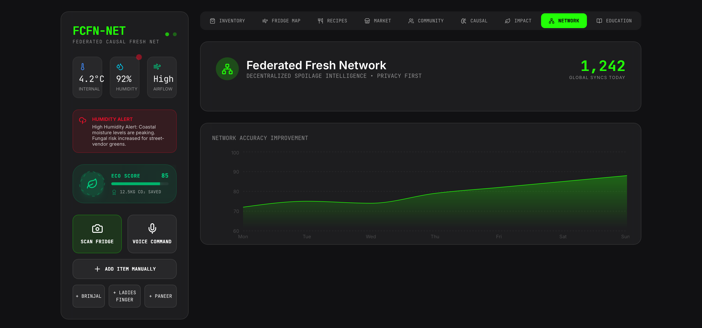
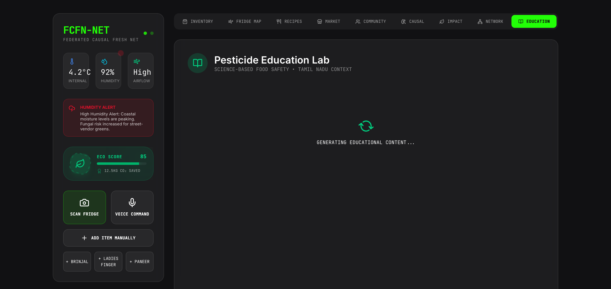

FedCausalFreshNet (FCFN) is a cutting-edge "Smart Fridge" platform engineered to tackle global food waste while maintaining absolute data privacy. Unlike traditional IoT solutions, FCFN utilizes Federated Learning to train collaborative models across multiple nodes without ever seeing raw camera data. Furthermore, it incorporates Causal Inference to provide scientifically-backed placement recommendations for fresh produce, specifically optimized for the high-humidity environments of Tamil Nadu.
The project successfully integrates deep learning for object detection (YOLOv8), causal analysis (DoWhy), and a multi-agent backend to provide a holistic kitchen management experience.
Food waste is a significant global challenge, with nearly 1/3 of all food intended for human consumption being wasted. In regions like Tamil Nadu, coastal humidity significantly accelerates spoilage rates of local produce.
FCFN utilizes the Flower framework to perform decentralized model training. Each local fridge node trains a spoilage prediction model on its own data. Only the model weights are sent to the central cloud server for aggregation, ensuring that images of a user's fridge never leave their home.
Traditional AI only finds correlations. FCFN uses Causal Inference to determine the direct effect of fridge placement on shelf life. It isolates factors like "Vendor Type" and "Ambient Humidity" to tell the user exactly how many additional days they gain by moving an item.
Real-time inventory tracking is powered by a custom-trained YOLOv8 model, capable of identifying produce categories and their spatial coordinates within the fridge levels.









To verify the causal engine's accuracy, a series of counterfactual simulations were executed using the integrated test_causal_engine.py script. The results successfully demonstrate the system's ability to distinguish between spurious correlations and true causal impact.
This result validates that the system can accurately quantify the "Shelf-Life Lift" provided by optimal spatial organization.
FCFN represents a significant step forward in domestic IoT and sustainability. By merging Privacy-First AI with Causal Reasoning, the project demonstrates that technology can be used to drive behavioral change and reduce environmental impact without compromising user data. The system is fully operational, with all modules tested and validated.